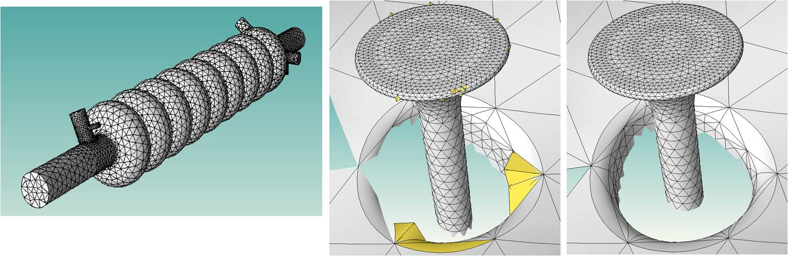

Mesh Curving Service
High-order finite element methods applied to curved domains require the use of properly curved elements. A common approach to the construction of such meshes is to apply straight-sided mesh generation and to then curve the mesh edges and faces on curved domain boundaries to the proper order by simply moving nodes. The problem with this procedure is a number of elements typically become invalid (negative determinant of the Jacobian over a portion of the element). Building on our existing higher order mesh generation and modification technologies we have, at the request of SciDAC applications, constructed a mesh curving service to construct valid and well shaped curved elements.
The mesh curving service can accept two types of input meshes. The first would be a curved mesh of second order curved simplex elements where some of the elements are invalid. In this case the procedure performs mesh modifications to make valid elements while maintaining the nodes placed on the curved geometries. The second is a valid straight-sided mesh, its related geometric model and the association of mesh edges and faces on the boundary of the domain with the model faces and edges they are on. Currently Parasolid, Acis, SolidWorks, and OpenCascade modeler etc. are supported for the geometric models.
The mesh curving service applies Bezier polynomials internally to represent the mesh geometry and performes local mesh modification operation in an incremental manner to correct the invalid elements [1]. In the situation where the given mesh uses different shape representation method, the conversion between the original representation method and the Bezier method is processed before and after applying the tool. The mesh region validity check takes advantage of the bounding property of the Bezier polynomials which ensures that the determinant of Jacobian of the element in its closure is always positive and is independent of the chosen integration scheme in the high order finite element method. The curved local mesh modifications are applied in a specific order that can effectively eliminate the invalid curved elements and make the resulting mesh valid [1]. The operations are built upon a set of operations including collapse, split, swap, and shape modifications.
The mesh curving service has been successfully applied to curvilinear meshes being simulated by the Stanford Linear Accelerator Center (SLAC) in the large-scale electromagnetic modeling. The valid curvilinear meshes not only make the time-domain simulations stable but also make the execution time up to 30% faster due to better condition matrices. Examples are shown below.
|  |
|---|
[1] Luo, X.-J., Shephard, M.S., O¡ÇBara, R.M., Nastasia, R. and Beall, M.W., ¡ÈAutomatic p-version mesh generation for curved domains¡É, Engineering with Computers, 20(3):273-285, 2004.